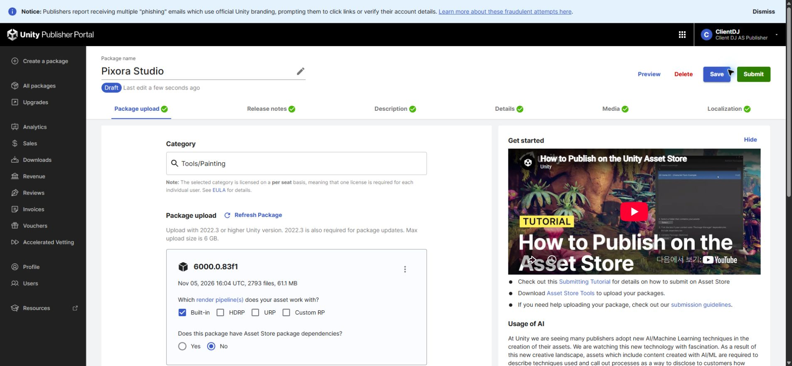
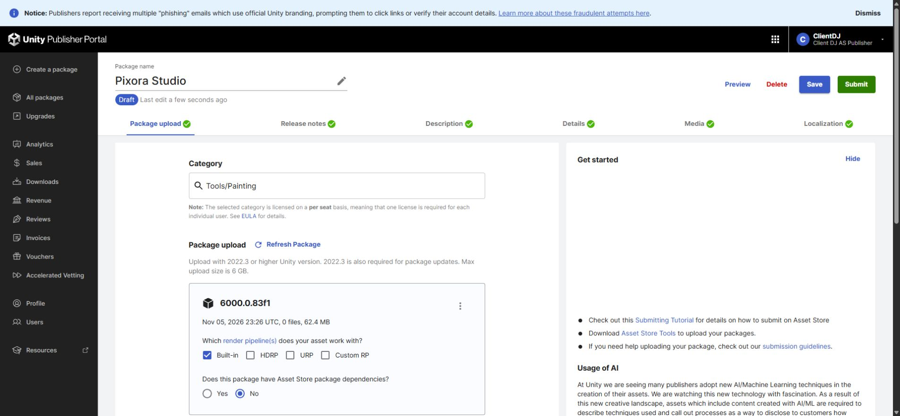
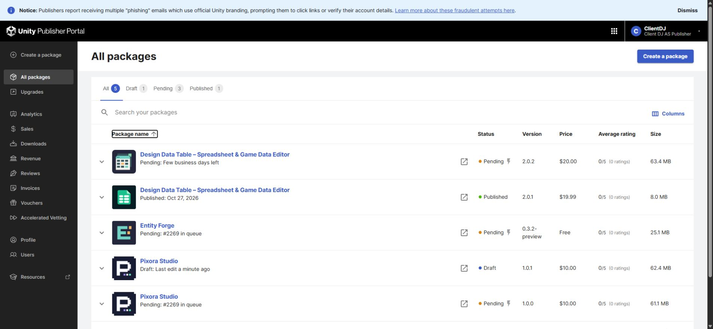
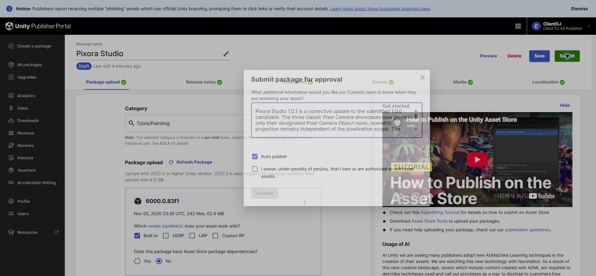

Tracefolio REPORTS & ISSUES
Tracefolio REPORTS & ISSUESPixora Studio 1.0.1 새 초안 업로드와 제출 직전 설정
검증 대기신규 Draft1547466에 검증 패키지를 업로드하고4개 판매 언어 변경 이력·심사 사유를 준비했습니다. 최종 제출은 실행하지 않았습니다.
작업 결과
사용자 승인으로 새 초안을 생성했습니다. 기존1.0.0 Pending(#2269)과1.0.1 Draft가 함께 존재합니다. 고정된1.0.1 파일 전송이 성공했고 심사 사유가 입력된 최종 확인 창을 열어 두었습니다.
변경 내용
적용 내용
Release version1.0.1 저장. 영어·한국어·일본어·중국어 변경 이력에1.0.1 내용을 추가하고1.0.0 이력은 보존했습니다. 모든 지원 판매 언어를 재열어 저장값을 확인했습니다. 새 초안의 가격·기존 설명·미디어·호환성 선택은 유지했습니다.
검증
실제 포털 안내: Updating and resubmitting this asset will not change its position in the queue. 순번#2269 확인 후 새 초안 생성. 공식 SDK는 제품424614·초안1547466·draft 상태를 확인하고 고정 SHA256 fa1fc9ae512068d1c9cfce1f85a5caa594e991d81002d4d6063fef9d59a0dd88 파일을 전송했습니다. SDK Success 완료2026-11-06 08:29:25 KST. 포털 새 업로드 시각23:26 UTC와62.4MB 확인. 파일 목록은0→342개로 처리 진행 중입니다. 최종 확인 창의 전체 영문 사유와 소유권 선서 미선택·I accept 비활성을 확인했습니다. 작업용 Unity24496은 정상 종료했습니다.    
남은 사항
서버의 전체 파일 목록 인덱싱은 아직 완료되지 않았습니다. 로컬 고정 패키지는2,794개 에셋이며 서버 처리 완료 후 대조해야 합니다. 최종 제출·소유권 선서는 실행하지 않았습니다. 심사 사유는 열린 제출 창의 입력 상태이며 서버 저장 확인은 최종 제출 전에는 불가능했습니다. 창을 닫거나 새로고침하면 사라질 수 있습니다. 교훈 검토: 실제 포털에서 재제출 시 순번 유지 안내를 직접 확인했고 과거의 미확인 상태와 구분해 기록했습니다. 기존 검증 지침 적용, 전역 추가 없음.
작업 시간
- 제안 시간: 5~10분
- 실제로 완료된 시간: 최초 계측2026-11-06 08:24:30 KST(초기 탭 열기 포함 시작 시각은 별도 미기록). 공식 SDK 업로드08:29:25, 버전·문구·초안 설정 기록08:30:48 KST. 이후 서버 인덱싱 진행 확인과 기록 공개를 계속합니다.
- XERJ: 미사용 — 기존 SDK 보조 코드·고정 패키지·포털 UI 대조. SDK 폴더는 기존 XERJ 등록 범위 밖입니다.